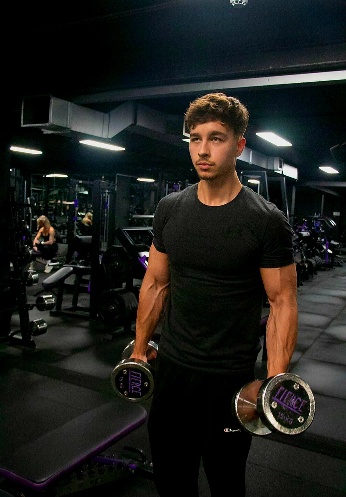

Beginners Who Feel Lost
Learn how to train properly and build confidence without second-guessing every session.

Meet Adrian
Adrian helps clients in Northampton build strength, improve fitness and feel more comfortable in the gym through focused 1-to-1 personal training.
Every session is tailored to your goals, whether you are new to the gym or ready to take your training further.
Suitable for complete beginners and more experienced clients.
Coaching that improves technique, confidence and consistency.
Who it's for
If you want more than random workouts and inconsistent motivation, this is for you.
Learn how to train properly and build confidence without second-guessing every session.
Stay more consistent with sessions that give you support, structure and direction.
Work towards better strength, fitness and self-belief with a focused plan.
How it works
Share your goal, your level and what you would like help with.
Adrian will get in touch to understand your needs, experience and availability.
Sessions are tailored to your level so you can train safely and confidently.
Progress with more structure, better technique and long-term consistency.
Why train with Adrian
Every session is shaped around your level, confidence and training goals.
Learn how to move better, feel stronger and train with more confidence.
Stay on track with coaching that gives you both structure and encouragement.
Client feedback
Real experiences from people who started their journey and built confidence, strength and consistency with 1-to-1 coaching.
I used to feel quite intimidated in the gym, but training with Adrian made me feel much more comfortable and confident. Everything is explained clearly and the sessions feel really supportive.
What I liked most was the structure. Every session had a clear focus and I could actually see progress over time. I feel stronger, more consistent and much more motivated.
Training with Adrian has made a huge difference to how I feel in the gym. I’m stronger, more confident and I finally feel like I know what I’m doing.
Personal Trainer Northampton
If you are looking for a personal trainer in Northampton, AJ Fitness offers 1-to-1 coaching designed around your goals, experience level and lifestyle. Whether you are a complete beginner, returning after time away from training, or looking to improve your results, sessions are built to give you structure, support and clear progress.
Personal training with Adrian focuses on correct technique, consistency and confidence. The aim is not just to make you work hard, but to help you train properly, feel comfortable in the gym and build habits that last. Every session is tailored to your level so you can improve safely and keep moving forward.
AJ Fitness provides personal training in Northampton for people who want to build strength, improve overall fitness, lose body fat, move better and feel more confident in themselves. With a supportive coaching style and personalised approach, clients get more than a workout — they get guidance, accountability and a clear plan.
You can also explore more focused coaching pages for fat loss coaching in Northampton, beginner gym coaching and 1-to-1 personal training depending on your current goal.
Start now
Whether your goal is fat loss, better fitness, more strength or simply feeling better in the gym, Adrian will help you train with more clarity and confidence.
No experience needed — sessions are tailored to your level.